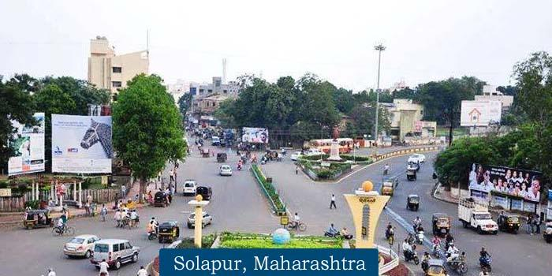
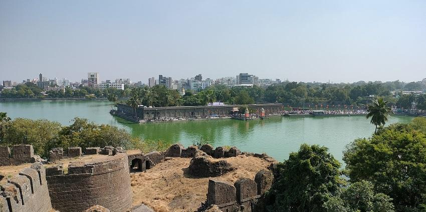
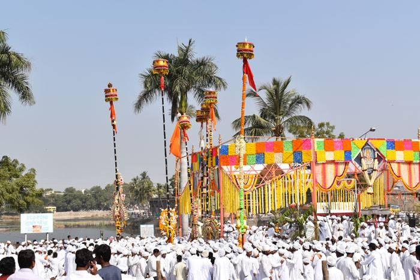
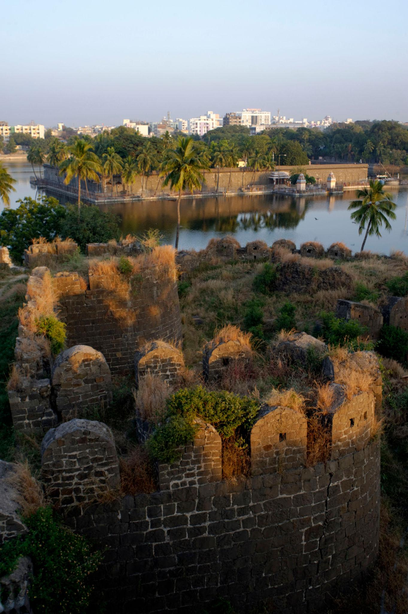
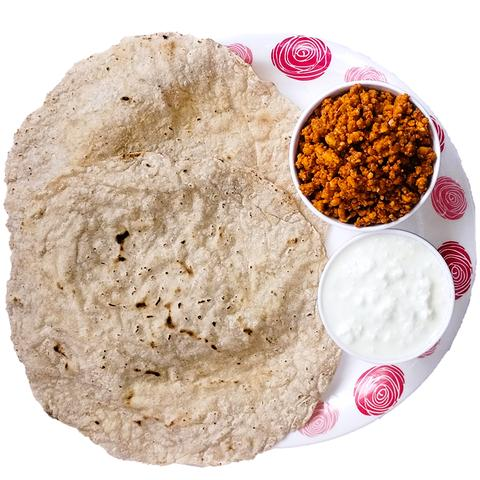
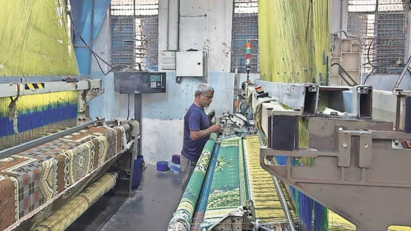
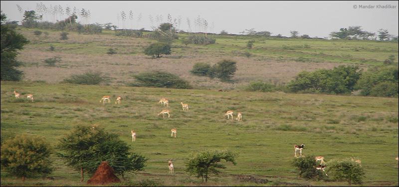
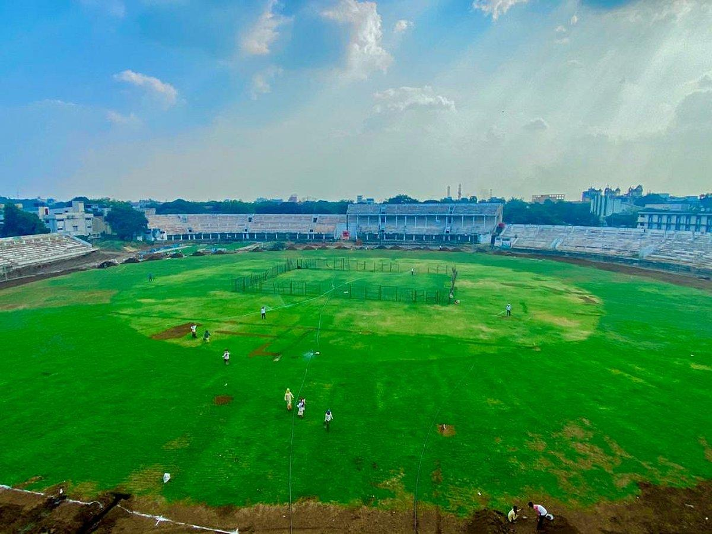

About

Solapur is an important city in the south-western part of Maharashtra, located near the Karnataka border. It is well connected by road and railway to major cities like Mumbai, Pune, Hyderabad, and Bengaluru. The city has recently developed infrastructure, including Solapur Airport, which was inaugurated in 2024.
The name “Solapur” is traditionally believed to be derived from two words — “Sola” meaning sixteen and “Pur” meaning village, referring to a group of sixteen villages that formed the region. However, historical records suggest that the city was earlier known as Sonalpur or Sandalpur, and the name gradually evolved into Solapur over time.
Solapur is widely known for its textile industry, especially for the famous “Solapuri chaddars” and towels, which are popular across India. It is also a major center for beedi production and power loom industries. Agriculture plays a key role in the district’s economy, with pomegranate farming being especially important.
The city has cultural and religious importance, with Shri Siddheshwar Temple being a major attraction. The annual Siddheshwar Yatra held during Makar Sankranti attracts a large number of devotees. Solapur is also known for the Great Indian Bustard Sanctuary, which highlights its environmental significance.
Historically, Solapur was ruled by several dynasties such as the Chalukyas, Rashtrakutas, Yadavas, and Bahamanis. Over time, it developed into an important cultural and economic center in Maharashtra.
Solapur also holds a special place in India’s freedom struggle. In May 1930, the city experienced a brief period of independence for three days during protests against British rule. Several freedom fighters sacrificed their lives, and their memory is honored at Hutatma Chowk in the city.
- Location: South-west Maharashtra near Karnataka border
- Connectivity: Well connected by road and railway
- Famous for: Textile industry (chaddars and towels)
- Agriculture: Known for pomegranate farming
- Religious place: Siddheshwar Temple
- Special identity: City of Hutatmas (Martyrs)
History

Solapur has a rich and diverse historical background. The region was ruled by several important dynasties such as the Chalukyas, Rashtrakutas, Yadavas and Bahamanis. Over time, the city developed as a significant cultural and administrative center in Maharashtra.
The origin of the name “Solapur” is often linked to the words “Sola” (sixteen) and “Pur” (village), suggesting a group of sixteen villages. However, historical inscriptions indicate that the city was earlier known by names like Sonalpur, Sandalpur and Sonnalagi, which gradually evolved into the present name.
During British rule, Solapur played an important role in India’s freedom movement. In May 1930, the people of Solapur briefly gained independence for three days after protests against British authorities. This event made the city historically significant in the struggle for independence.
Many freedom fighters from Solapur sacrificed their lives during this period. In their honor, Hutatma Chowk was established, and the city came to be known as the “City of Martyrs.” The hoisting of the national flag at the municipal building in 1930 was also a remarkable event in Indian history.
After independence and the reorganization of states in 1960, Solapur became an official district of Maharashtra. Since then, it has continued to grow as an important urban and cultural center in the state.
- Ruled by: Chalukyas, Rashtrakutas, Yadavas, Bahamanis
- Old names: Sonalpur, Sandalpur, Sonnalagi
- Name origin: “Sola” (sixteen) + “Pur” (village)
- Freedom movement: 3 days independence in May 1930
- Famous place: Hutatma Chowk (martyrs memorial)
- District formed: Became part of Maharashtra in 1960
Culture

Solapur has a unique and diverse cultural identity shaped by the influence of Maharashtra as well as neighboring states like Karnataka and Telangana. The city reflects a blend of Marathi, Kannada, and Telugu traditions, making it culturally rich and vibrant.
Religion plays an important role in the lifestyle of people in Solapur. The Shri Siddheshwar Temple is a major spiritual center, and the annual Siddheshwar Yatra is one of the most important cultural events, attracting devotees from different regions. People from various communities live together, creating a harmonious and multicultural environment.
Solapur is also known for its traditional lifestyle, including the old “wada” system of housing, which reflects the architectural heritage of the region. Festivals such as Diwali, Ganesh Chaturthi, and Navratri are celebrated with great enthusiasm and community participation.
The city has a rich textile culture, especially famous for its handloom products like chadars and towels. Along with this, the food culture of Solapur is distinctive, with popular dishes such as jowar bhakri, pithla, shenga chutney, and local variations of idli being widely enjoyed.
Overall, the culture of Solapur represents a perfect blend of tradition, diversity, and everyday simplicity, making it an important cultural center in southern Maharashtra.
- Languages: Marathi, Kannada, Telugu
- Main festival: Siddheshwar Yatra
- Major festivals: Diwali, Ganesh Chaturthi, Navratri
- Lifestyle: Traditional wada culture
- Communities: Multi-religious and diverse population
- Special identity: Blend of different cultures
Tourism

Solapur is an attractive destination for visitors who are interested in history, religion, and nature. The city offers a mix of peaceful temples, historical places, and natural attractions, making it suitable for different types of travelers.
One of the main attractions is the Siddheshwar Temple, which is located in the center of the city and surrounded by a beautiful lake. The Bhuikot Fort is another important site, known for its historical structure and greenery. Nature lovers can visit the Great Indian Bustard Sanctuary, which is home to rare bird species.
Other places to visit include Hipparga Lake, which is ideal for relaxation and birdwatching, and the Solapur Science Centre, which is popular among students and families. These places provide both educational and recreational experiences.
Solapur also serves as a gateway to nearby pilgrimage centers like Pandharpur and Tuljapur, which are important religious destinations in Maharashtra.
The best time to visit Solapur is between September and February, when the weather is pleasant. Visitors can also enjoy shopping for local handloom products and exploring the city’s traditional markets.
- Siddheshwar Temple
- Bhuikot Fort
- Great Indian Bustard Sanctuary
- Hipparga Lake
- Solapur Science Centre
Famous Food

Solapur is known for its rich and flavorful food culture, which includes a mix of Maharashtrian, Karnataka, and Telugu influences. The food here is generally spicy, simple, and full of traditional taste.
Some of the most popular dishes include jowar bhakri with zunka, which is a common local meal, and katachi amti, a spicy and tangy lentil curry usually prepared during festivals. Shenga poli, a sweet flatbread made from peanuts, is also a special dish of the region.
Street food is an important part of Solapur’s food culture. Items like sangam vada, dahi puri, pav bhaji, and vada pav are widely enjoyed by locals and visitors. Khawa poli, a sweet dish made from milk solids, is another popular delicacy.
Solapur is also known for its agricultural products, especially high-quality pomegranates, which are widely grown in the region. The city’s local food streets, often called “Khau Galli,” offer a variety of snacks and traditional dishes in one place.
Overall, the food of Solapur reflects its cultural diversity and provides a unique taste experience for visitors.
- Zunka Bhakri
- Katachi Amti
- Shenga Poli
- Sangam Vada
- Dahi Puri
- Khawa Poli
Economy

Solapur has a strong and well-developed economy based on industry, agriculture, and trade. It is considered one of the important industrial cities in Maharashtra.
The textile industry is the backbone of Solapur’s economy. The city is well known for producing high-quality bedsheets, towels, and other handloom products. Thousands of powerloom and textile units operate in the region, providing employment to a large number of people.
Agriculture is another major part of the economy. Crops like sugarcane, jowar, and oilseeds are widely grown. Solapur is also known for its sugar mills and agricultural markets, which support farmers and local businesses.
In addition to textiles and agriculture, the city has various small and medium-scale industries such as food processing, leather, and manufacturing units. Its location and transport connectivity help in the smooth movement of goods and trade activities.
Overall, Solapur continues to grow as an important economic and industrial center, contributing to the development of the region.
- Main industry: Textile (chaddars, towels, handloom)
- Units: Thousands of powerloom industries
- Agriculture: Sugarcane, jowar, oilseeds
- Other industries: Food processing, leather, manufacturing
- Trade: Important commercial hub for nearby regions
- Growth: Developing industrial and transport connectivity
Environment

Solapur has a semi-arid climate with hot summers and low rainfall. The region often faces water scarcity and drought-like conditions, which affect agriculture and daily life.
The city also faces environmental challenges such as air pollution caused by textile industries, sugar factories, and increasing vehicle use. Dust from stone crusher units in nearby areas also adds to pollution levels.
Despite these challenges, efforts are being made to improve the environment. Tree plantation drives and “Go Green” initiatives are being carried out to increase greenery in the city. Plans for cleaner fuel options like CNG are also being introduced to reduce pollution.
The natural landscape of Solapur includes flat terrain with dry vegetation and scrub forests. The region is also home to the Great Indian Bustard Sanctuary, which plays an important role in protecting rare bird species.
Overall, Solapur is working towards balancing development with environmental protection through awareness and sustainable practices.
- Climate: Semi-arid with hot summers
- Rainfall: Low and irregular
- Major issue: Water scarcity
- Pollution sources: Industries, vehicles, stone crushers
- Initiatives: Tree plantation and Go-Green programs
- Special area: Great Indian Bustard Sanctuary
Sports

Solapur has an active sports culture with good facilities for both training and recreation. Various sports are played in the city, and many young players participate in competitions at school, college, and district levels.
Popular sports in Solapur include cricket, football, badminton, swimming, and athletics. The city has several grounds, clubs, and sports complexes that support these activities and provide training opportunities.
The District Sports Complex is a major center for sports activities, offering facilities for outdoor and indoor games. Apart from this, private clubs and turf grounds are also available for cricket and football, which are widely used by local players.
Many sports academies in Solapur provide coaching in games like cricket, badminton, shooting, and martial arts. These academies help students develop skills and participate in higher-level competitions.
The city also organizes local tournaments, marathons, and inter-college sports events, encouraging participation and promoting a healthy lifestyle among people.
- Popular sports: Cricket, football, badminton, athletics
- Main facility: District Sports Complex
- Other venues: Clubs and turf grounds
- Training: Cricket, badminton, shooting academies
- Events: Local tournaments and marathons
- Focus: Youth participation and fitness